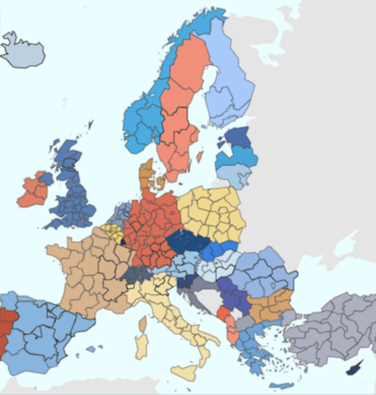
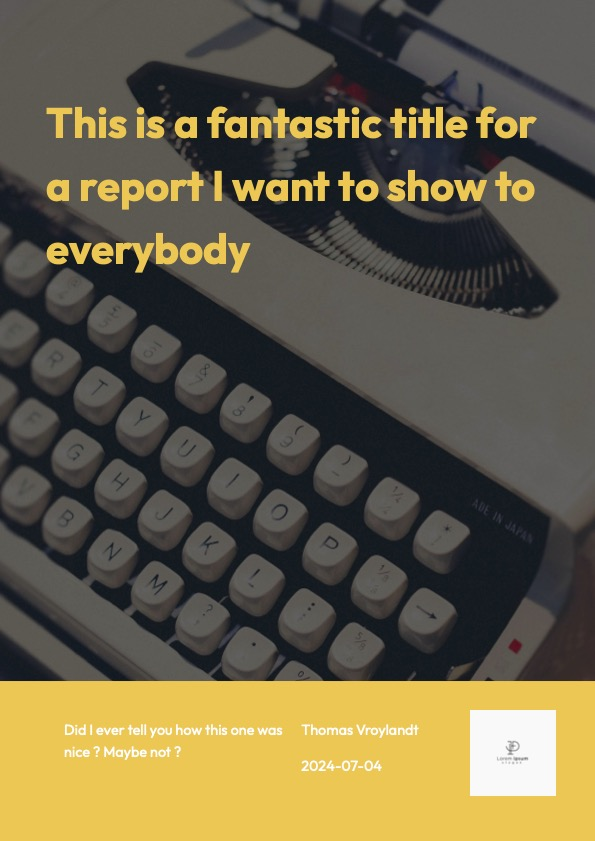

Parametrized Nice Reports with Quarto and PDF
UseR 2024
whoami
Founded a consultancy business
Also work with R for the Rest of Us

Produced 1000+ parametrized reports
Contact me: thomas@kantiles.com
Parametrized Reporting ?
From one report many
PSC Housing


Oregon Voices
IA2030


Child Welfare Program
Why not a dashboard ?
Dashboard
Pull approach
Bring global & detailed understanding
Interactive viz and tables
For analysts & data practitioners
https://
Reports
Push approach
Bring local comprehension & awareness
Static tailored viz
For people on the field & partners
Portable Document Format (PDF)
Why not something else ?
- Infographics
- Graphs
- Analysis note
- Excel files
- Data API
- …
Why not something else ?
Ask:
- for what ?
- for who ?
- frequency
- ability to build yourself
- maintenance
Parameters
Choose your parameters
Areas

Sectors
Units
Combine them but check you have enough data
Put them on the header
And re-use them with params$XXX :
- in code
- in inline text
- in your style
Pass the salt
- CSS
- Typst (can be nested)
Tools
Pick up a tool

Text

Computations


PDF engines


Comparison
Typst
Quarto format
Lightning quick
Custom langage for layout
Great for simple templates
weasyprint
Pandoc engine
Quick
No preview
Best tool for most of the cases
French
pagedjs-cli
Pandoc engine
No direct preview
Most complete tool
JS based
Design advices
- Make your parameters explicit
- Think about the extreme cases like long names in margins
Design advices
- Make your sections visuals with named pages & colors
Design advices
- Columns are great but difficult to handle
Create a template with Typst
Set up the format + use partials:
typst-show.typtransfer the parameterstypst-template.typis the template
font-pathsallow you to use custom fonts by putting them in a folder
Create a template with Typst
typst-show.typ
Create a template with Typst
typst-template.typ: all is valid until replaced
// format with custom parameters
#let my-report(
title: "Title",
subtitle: none,
country_name: none
body,
) = {
// text default
set text(
font: "Calibri",
size: 11pt,
)
// --- Configure first page ---
set page(
"us-letter",
background: place(right, rect(fill: rgb(#123456), width: 30%, height: 100%)),
margin: (left: 1in, right: 1in, top: 0.7in, bottom: 1in),
)
// --- title grid ---
v(5%)
// logo
image("logo.svg", height: 10%)
v(10%)
pad(text(16pt, weight: "regular", country_name), right: 30%)
v(5%)
pagebreak()Create a template with Typst
// --- Configure the rest of the pages ---
set page(
"us-letter",
background: place(top, rect(fill: rgb(#123456), width: 100%, height: 0.5in)),
footer: {
line(length: 100%)
},
margin: (left: 1in, right: 1in, top: 0.7in, bottom: 1in),
)
// --- headings ---
// level 1 is ## if there is no #
// level 2 is ###
// level 3 is ####
show heading.where(level: 1): it => [
#set text(17pt, weight: "bold")
#block(it.body)
]
show heading.where(level: 2): it => [
#set text(fill: rgb(maincolor), size: 15pt, weight: "regular")
#block(it.body)
]
show heading.where(level: 3): it => [
#set text(fill: rgb(maincolor), size: 12pt, weight: "regular")
#block(it.body)
]
// --- body ---
body
}Create a template with CSS tools
All the others tools are based on CSS Paged Media
Differences but more or less compatible between them
I did a full talk about how to template things (in French) for
pagedown. See the video
Quick how-to
- Add your parameters as CSS vars: fonts, colors, margins, images
Quick how-to
- Create your global style with them :
Vars that have been created in the Quarto file can also be used
Quick how-to
- Define page size and margins
Quick how-to
- Add content in margins
Use
content: "";to display the background color or image.
Quick how-to
- Add content in margins
Quick how-to
- Build title page
- Don’t forget
.titleand others
display: none;helps to remove the global content in margins
Quick how-to
Define named pages
with fenced div
:::named1+:::or classic HTML
<div class="named1">+</div>CSS side :
Quick how-to
- And the content inside too
Quick how-to
Define utility functions :
- columns (use CSS Grid first !)
img-> remove defaults margins- …
You can arrange some positions with negative margins and positive paddings. Play with them !
Since page size is fixed, think to use
position: absolute;if needed
Presenting quarto.report
- Quarto extension
- based on
weasyprint - Aim at facilitating templating
- Can be use for parametrized reporting
- Both R & Python
Presenting quarto.report
Change parameters in the YAML (or _quarto.yml file)
quarto.report - typewriter
- main image on title page
- table of contents by default

quarto.report - chalk
- two colors template
- table of contents by default
quarto.report - corner
- well suited for parametrised reporting
- one additional named page by default

Data
Prepare your data
Avoid as much as possible computations within the report
Pay attention to formats - use
scalesMake sure your data is unique by parameter
Check missing data
Compute explicit missing data with tidyr::complete
Graphs
Pay attention to limits
- Your graphs should work in all cases
- The more granular you go, the more extreme your values will be
- You should plot your data first
If you got this warning from
ggplot2, you probably messed up something with limitsWarning message: Removed 7 rows containing missing values or values outside the scale range (`geom_point()`).
Pay attention to limits
Limits can be set dynamically
Handle the size
- Output as
svgorsvglite(withfig-format) - Setup
fig-widthandfig-heightfor all plots
Set up a reference
To the global level
To others
In time
You can pick them all
Set up a reference
Set up a reference
Set up a reference
Declutter & highlight
- use facets
- don’t label everything
- hide small values
- think about labels position
- highlight what’s important
Text
Stay dynamic
Be informative about comparisons :
- growth
- difference
- Compute before display
```{epoxy, .data=txt_data_1_3}
In {year}, measles elimination was <span class = "txt-navy">achieved
</span>in {nb_achieved} countries in the WHO region, while it was
<span class = "txt-yellow">re-established</span> in
{nb_reestablished} countries and <span class = "txt-red">
not achieved</span> in {nb_not_achieved} countries.
```Highlight
Use :
- size
- color
- weight
<span>...</span>
Generate
Render them all
- list of parameters
mapquarto_render
Render them all
Use
fs::file_moveto move your reports to the right folder (see )
Quality insurance
- Check the number of pages !
Check reports with extreme values :
- long names
- outliers in data
- missing data